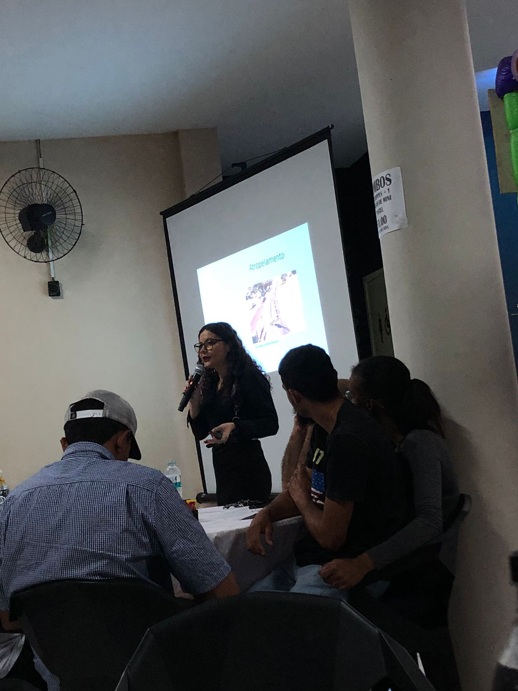
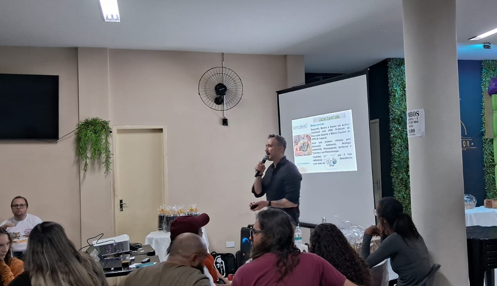
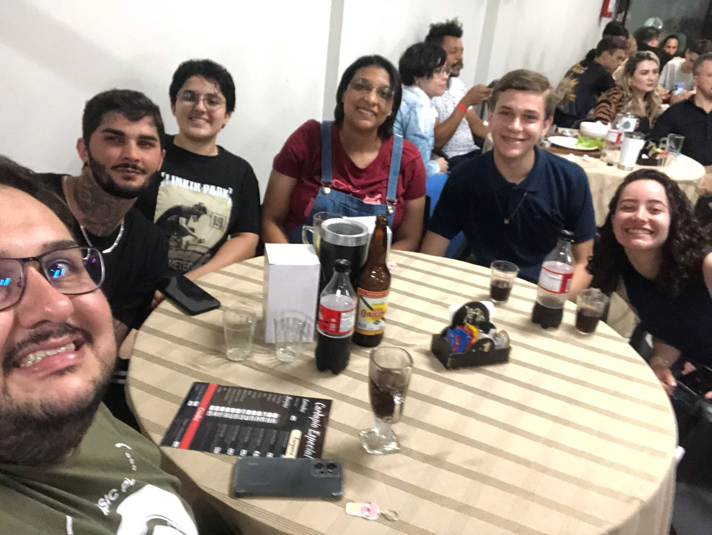

O Pint of Science é um festival internacional que leva a ciência diretamente para você, em bares e espaços informais. Durante o evento, cientistas compartilham descobertas e pesquisas atuais de forma simples e descontraída, criando um ambiente perfeito para conversar, aprender e se inspirar. A proposta é quebrar barreiras entre cientistas e o público, tornando a ciência parte do nosso dia a dia, com um copo na mão e muita curiosidade no olhar.
O evento busca derrubar as barreiras entre o cientista e o cidadão comum, promovendo a circulação livre do conhecimento em um ambiente descontraído. A proposta é simples: tornar a ciência parte do cotidiano — próxima, compreensível e envolvente. Mais do que uma troca de ideias, o evento representa um verdadeiro movimento de aproximação entre a pesquisa científica e a sociedade. Ele mostra que a ciência não precisa estar restrita a laboratórios ou salas de aula — ela pode (e deve) estar nas conversas de bar, nas rodas de amigos, nas perguntas que movem o mundo. Trata-se de uma iniciativa de grande importância, pois valoriza o papel do conhecimento na construção de uma sociedade mais crítica, informada e participativa. Ao conectar cientistas e o público em um ambiente informal, criamos pontes que aproximam realidades e despertam novos olhares para temas essenciais. As palestras foram conduzidas pela especialista em Ciências Forenses Fabiane Barbosa e pelo paleontólogo e doutor em Ciências Ambientais Lucas Sant’Ana
Fabiane Barbosa – Palestra sobre “A Física Aplicada à Perícia Criminal”
Lucas Sant’Ana – “Você gosta de dinossauro assado ou frito?”
